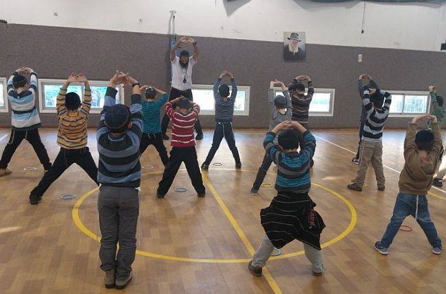

החיפושים: שנים ארוכות חיפשתי מדוע כל כך סוער בתוכי. גם כשהגעתי לפסגת ההצלחה, עזב
החיפושים: שנים ארוכות חיפשתי מדוע כל כך סוער בתוכי. גם כשהגעתי לפסגת ההצלחה, עזבתי הכל והמשכתי הלאה. התפנית: אותה שבת ראשונה ששמרתי בחיי במלבורן, סתם כך, מבלי שהבנתי מדוע. חיבורים: בין גוף ונפש, באמצעות לימודים של קרב מגע וריפוי טבעי. המתנה: את התובנות והיכולות שהשגתי בחיי, אני מעניק לילדים באמצעות
החיפושים: שנים ארוכות חיפשתי מדוע כל כך סוער בתוכי. גם כשהגעתי לפסגת ההצלחה, עזבתי הכל והמשכתי הלאה. התפנית: אותה שבת ראשונה ששמרתי בחיי במלבורן, סתם כך, מבלי שהבנתי מדוע. חיבורים: בין גוף ונפש, באמצעות לימודים של קרב מגע וריפוי טבעי. המתנה: את התובנות והיכולות שהשגתי בחיי, אני מעניק לילדים באמצעות למידה חיובית במסגרת בתי ספר של חב”ד * סיפורו המרתק של ר’ ליאור ענבר מרחובות, שעבר חיים פתלתלים ומרתקים

המיזם הנפלא הזה הופך את החינוך הגופני לפלטפורמה חינוכית עם ערך חסידי רב. את הפרויקט הוגה ומפעיל ר’ ליאור ענבר משיכון חב”ד בלוד והוא קוצר בה הצלחות מרשימות.
“כל בית ספר הפועל תחת משרד החינוך מקבל שעות מיוחדות עבור חינוך גופני. מהות התוכנית שלנו היא לנצל את השעות הללו כדי להעביר לילדים שיעורים מלאי תנועה וכיף, ודרכם להעניק לכל ילד כלים חסידיים להתמודדות עם מצבים שונים בחייו. המשחקים, המשימות והתרגילים מעניקים לילד חוויות מתמשכות של אהבת ישראל, שליטה במחשבה דיבור ומעשה, העצמת גאון יעקב, יציאת מצרים אישית, הסחת הדעת, ביטחון בה’ וכדומה. אני רואה בחוש איך הנקודה החסידית מתגלה ומתעצמת”, מתאר ר’ ליאור בקצרה את ליבת הפרויקט. בסדרת שיעורים אלו מצליח ר’ ליאור לעיתים רבות במקום ששיטות חינוך אחרות כשלו.
ראשי האיגוד היו המומים: עכשיו אתה פורש?!
בשחר ילדותו לא תיאר ר’ ליאור שתחום עיסוקו יהיה בשדה החינוך. חייו עברו טלטלות ונפתולים רבים. הוא נולד בנתניה וגדל בבית מסורתי. העובדה ששני דודיו הם מחשובי חסידי חב”ד, הרב מאיר וחיים אהרון, השפיעה עליו רבות. הוא ידע תמיד להעריך את דרך החסידות, אך גלגולי החיים משכו אותו לכיוון אחר.
ר’ ליאור היה מסוג הילדים שמגלים עניין ומתלהבים מהר מכל דבר חדש שצץ, אך באותה מהירות גם נמוגה ההתלהבות. “התחברתי פחות ללמידה עיונית. תמיד חיפשתי למידה דרך חוויה, וזה מה שהביא אותי בגיל הנערות להיות שותף בלהקת המחול של נתניה. הופענו על במות בארץ ישראל ובחוץ לארץ. זו הייתה תקופה יפה שפסקה עם גיוסי לצבא. שלוש שנים שימשתי בתפקיד סתמי - מחסנאי במכון ווינגיט, אך שם נחשפתי לעולם הספורט”.
אביו של חבר, שהיה אחד מארבעת ראשי האיגוד הלאומי לקרב מגע, הציע לו להשתתף בקורס שנמשך שנה בו יוכשרו מאמנים בתחום. “אל הקורס הזה הגיעו חבר’ה שהיו בעלי רקע רציני בתחומי לחימה אחרים, ורק אני הגעתי מתחום הריקוד… התחברתי מאוד לאימונים שהיו מרתקים בעיני. אהבתי את הגאונות שבפשטות בשיטה הזו. בתום שנה קיבלתי תעודת מאמן, והתחלתי לאמן כחמש מאות ילדים בשבוע לקרב מגע. נהניתי מכל רגע”.
לאחר כשנתיים החל ליאור להבחין שבלי לשים לב, בזמן הליכה ברחוב או בישיבה באוטובוס וכדומה, הוא מדמיין סיטואציות של תקיפה ואיך הוא מתמודד איתן. “יום אחד הרגשתי את הגוף שלי כולו קשוח בזמן הליכה סתמית, וזה גרם לי לחשוב: האם זה נכון לחנך ילדים לדמות מצבי אלימות בחייהם? הבטתי על זקני השבט שחיו את תורת הקרב מגע, והבנתי שאינני רוצה להיות כמותם.
“כשהודעתי על–כך לראשי האיגוד, הם היו מוכי תדהמה. ‘הרי אתה מאוד מצליח ויש לך עתיד מזהיר בתחום! עכשיו אתה פורש?’ הקשו, אבל בתוכי לא הייתי שם יותר. לא השתכנעתי. בדיעבד אני יודע שחיפשתי דרך חיים פנימית ואמתית ולא מצאתי את זה בתורת הקרב–מגע. דבר אחד טוב בכל זאת קיבלתי מכך - הביטחון העצמי והדימוי העצמי שלי התחזקו. בתור ילד הייתי פחדן וחששן, והנה כעת קיבלתי אומץ”.
בתקופה הבאה המשיך ליאור לחפש את מקומו, והגיע לעולם של הרפואה הטבעית.
כמו בקרב מגע, הימים הראשונים במכללה לשיאצו בכרכור גרמו לו לחוש שמצא סוף סוף את שאהבה נפשו, וזה מה שישקיט את צימאונו הפנימי. “גיליתי שיש לי אינטואיציה חזקה וקצרתי הצלחות רבות בטיפול באנשים. בשלב מסוים הרגשתי שאמנם אני מצליח עם אחרים, אך מה איתי?! נפשי שלי סוערת ולא רגועה, מי שמטפל באחרים צריך להיות נקי בעצמו”…
יום בהיר אחד, ארז ליאור את מטלטליו וטס להודו, שם רכש אופנוע, ויצא למסע ממרכז המדינה צפונה. הוא העדיף שלא להימצא בחברת יהודים ישראלים, וחיפש דוקא את קרבתם של ההודים המקומיים. בחלוף חמשה חודשים של טיול ארוך וגדוש–חוויות, חזר ארצה עם שתי תובנות שעיצבו מאז את דרכו: “התובנה הראשונה הייתה שערך החיים אצל ההודים רחוק מלהידמות לזה של עם ישראל. זאת למדתי כבר בנסיעה הראשונה שלי באוטובוס, כאשר הבחנתי בנהג ההודי שהיה שיכור כלוט מזגזג בין הנתיבים. בשלב מסוים ניסיתי להבין מה קורה, ואיך יכול להיות שכל הנוסעים יושבים שלווים במקומותיהם מול העקיפות המסוכנות והפגיעות ברכבים אחרים, כשבחלק מהנתיב פעורה מן הצד תהום אימתנית - או אז שמעתי דיבורים על ‘גלגולי נשמות’ והתמלאתי פחד… כשהסתיים הסיוט, היה לי ברור שיותר לא אעלה על אוטובוסים הודים.
“תובנה שנייה הייתה שאני יכול להצליח בכל דבר שאבחר. היה זה כשהמנוע באופנוע ששכרתי חדל לעבוד, ואחד ההודים בכפר הקרוב לדרכי, גילה נדיבות והציע לתקנו. הוא עמל על המנוע במשך שעות ארוכות, פתח ושחרר את כל הברגים. בשלב מסוים הייתי בטוח שאין לו שמץ של מושג איך להשיב כל דבר למקום, אך לתדהמתי הוא הצליח להשיב כל חלק למקומו ולגרום למנוע לעבוד בשנית. חשבתי לעצמי - ‘אם אותו הודי יכול, גם אני וכל אחד יכול’. הבנתי שיכולותינו נגזרות מבחירותינו ללמוד ולהצליח”.
הנשמה זעקה לעומק רוחני, ואני לא הבנתי…
עם שובו ארצה, התמלא ליאור במוטיבציה להשלים את לימודי הרפואה הטבעית. הוא נכנס ללמוד במכללה ללימוד רפואה סינית בתל–אביב, התיידד עם מורהו וזה שילב אותו כעוזרו האישי בהוראת הקורסים. מאוחר יותר פתח ליאור מרפאה משלו ביישוב אבן יהודה שפעלה במשך שבע שנים ומשכה אליה פציינטים רבים. הוא התחבר לאדמה ולטבע, ויחד עם חבר טוב, החל לבנות בזמנו החופשי, חווה לגידול בהמות ועופות.
“זו הייתה תקופה עמוסה מאוד בחיי. היה לי מספיק כסף, ועסקתי בצורה אינטנסיבית בכל מה שהתעניינתי מאז היותי ילד. חזרתי להתאמן ולאמן קבוצות בקרב מגע, טיפלתי ולימדתי דיקור ורפואה סינית, הייתה לי חווה שהשקעתי בה זמן רב, כתבתי והלחנתי שירים אותם הייתי שר עם חברים ירושלמיים. הייתה בי תחושה שיש לי הכול”.
אלא שבגיל שלושים ושתיים, כמו בתחנות רבות בחייו, החליט לעזוב הכול ולטוס לאוסטרליה. מדוע? למה? הוא עצמו לא ידע לתת תשובה. “כשאבי שאל אותי ‘למה?’ עניתי שאני מרגיש שאני לא נמצא במקום שלי, משעמם לי. בדיעבד אני יודע היום שנשמתי פשוט זעקה לעומק רוחני, אך לא ידעתי להבין את רצונה.
לטוס עד אוסטרליה, כדי להבין…
“תחנתי הראשונה הייתה בסידני ומשם למלבורן. מיד עם הגעתי, פרסמתי מודעה בעיתון מקומי ובה חיפשתי עבודה ברפואה סינית. ציפיתי למצוא עבודה בקלות, אך ציפייתי הייתה לשווא. הכסף שהבאתי עמי הלך ואזל, והטלפון לא צלצל.
כדי להחזיר לעצמי את הסדר בראשי, החלטתי להתחיל לשמור שבת. יום למחרת קיבלתי את הצעת העבודה הראשונה - לעבוד בשישי–שבת. אמנם נשארו לי רק 70$, אך מצאתי את עצמי מסביר למישהו שאני לא יודע אפילו אם הוא יהודי או גוי, שאני יהודי, ושיהודים לא עובדים בשבת… הוא הסכים שאעבוד רק יום אחד. זה היה יום של עבודה פיזית קשה מאוד, אך התרגשותי הלכה וגברה לקראת השבת הראשונה שאני הולך לשמור. בדרך לבית חב”ד של הרב דודו לידר, השליח למטיילים במלבורן, התקשרתי לאימי בהתלהבות גדולה - ‘אני שומר שבת!!!’ למחרת השבת, כבאורח פלא, החלו לזרום אלי הצעות עבודה ללא הפסקה, הצעות שלא קשורות כלל לרפואה סינית…
“היה ברור לי שהעובדה ששמרתי שבת, היא אשר סייעה לי. אם לא די בכך, הרי שבתוך שבועיים הפכתי ל’מודיעין של עבודות’. הטלפונים לא פסקו אלי עם הצעות לעבודה, ומצד שני, ישראלים שחיפשו מקומות עבודה פנו אלי ותיווכתי ביניהם. בבית חב”ד של הרב לידר במלבורן הרגשתי מעין סגירת מעגל, כאילו כל חיי נעו אל הנקודה הזו. לאחר כמה שבועות קיבלתי על עצמי ללבוש ציצית, כל המניעות הוסרו. בארץ כבר פעמיים ניסיתי לחזור בתשובה, אך זה לא החזיק מעמד. הפעם ידעתי שזה יצליח”.
בתוך כמה שבועות החיים של ליאור השתנו מהקצה אל הקצה. הוא הבין שבעצם הוא מסיים תהליך חיפוש ארוך שבער בו מאז היה ילד.
מאוסטרליה שב ליאור לרחובות, לישיבת ‘דעת’ בראשות הרב יצחק ערד, שם למד נגלה וחסידות. “הייתי צריך לטוס עד אוסטרליה כדי להבין שמה שחסר לי זה לימוד תורה ושמירת מצוות”, הוא אומר בפנים מחייכות. “עוד קודם חזרתי ארצה, הקב”ה סידר שלא יהיה מה שיפריע להחלטתי לצעוד בדרך האמת. היה זה כשחברי מהמושב סיפר שעדר הכבשים שעליו עמלנו והשקענו בו סכומי כסף רבים, נגנב ולא נותר ממנו מאום. הוא חשב שאכעס, אך אני צחקתי וסיפרתי לו על דרכי החדשה”…
לחנך דרך חווייה
חודשים ספורים אחר כך הגיע לפרק ‘האיש מקדש’ והקים את ביתו. הזוג הצעיר בחר לקבוע יתד “בסמיכות למקום הישיבה”, כפי שכתב הרבי באגרת תשובה לבקשה לברכה למציאת דירה - סמוך לכולל של דודו הרב אהרון ברחובות, שם למד סמיכה לרבנות במשך חמש שנים ושם התעצבה דמותו החסידית. בעת לימודיו במסגרת הכולל, קיבל הצעה מבן דודו הרב שניאור זלמן אהרון, מנהל תלמוד תורה בתל אביב, לשמש כמורה. הוא אף שימש כמחנך. “הצלחתי בזה מאוד, אך הרגשתי שזה לא היעוד שלי”.
למה בעצם?
“ראיתי דבר פלא, כשלימדתי בכיתה משנה וגמרא הייתה הקשבה, אך לא מלאה. הייתי בטוח שכשאדבר על ערכים ויסודות חסידיים, תהיה יותר הקשבה, אך התבדיתי. בשלב מסוים הייתי בטוח שאם אתבל את דבריי בסיפורים, ההקשבה המקסימלית בוא תבוא - אך לשווא. אמנם מפלס ההקשבה עלה, אבל עדיין היה לוקה בחסר. ואז - ראה זה פלא, כשיצאתי עם תלמידיי מחוץ לכיתה וקיימתי פעילות חינוכית דרך חוויה בחצר בית הספר, ההיענות הייתה מוחלטת.
הבנתי שיותר מדויק בשבילי לחנך וללמד דרך חוויה. היה זה לאחר שעברנו להתגורר בשיכון חב”ד בעיר לוד, וכאשר הצעתי את הרעיון בפני מנהלי תלמודי התורה בתל–אביב ובלוד, הם הסכימו לנסות. התחלתי לאמן יום–יומיים בשבוע - כל כיתה קיבלה שעה אחת, שבה שילבתי פעילות פיזית דינמית במגוון משימות קוגניטיביות, כשהרציונל מאחורי כל פעילות היא לייצר מצבים מאתגרים ובכך “לאלץ” כל ילד לגלות את פנימיותו היהודית–חסידית. ההצלחה הייתה מסחררת; המנהלים והצוות החינוכי ראו כי טוב, וביקשו להרחיב את שעות הפעילות לכיתות נוספות.
החלטתי שפעילותי תתמקד בנושאים “בוערים”: שיפור קשב וריכוז, שכלול הבנת הוראות וביצוען, והעצמה אישית וחברתית. רתמתי את כל הידע שאספתי בכל תחנות חיי מאז היותי ילד, בריקוד, בהוראת קרב מגע לילדים וכמובן את התובנות שלמדתי ברפואה הטבעית, ושילבתי אותם בדרכי החסידות וערכיה. אני עצמי הייתי תלמיד שהתקשה לשבת וללמוד בצורה פרונטאלית, ולכן אני כל כך מבין את התלמידים שמתמודדים עם קושי להתרכז בכיתה. זו הסיבה שאני רואה בזה שליחות קודש”.
אימון חסידי
תוכל לתת דוגמאות איך דרך ‘חסידות גופא’ מתגלים בילדים הערכים החסידיים?
“אתן לך דוגמה: כשאנחנו יורדים מהכיתה אל המגרש, אני מזכיר לילדים שאנחנו הולכים יפה ולא רצים, ומדגיש בפניהם שהליכה מסודרת היא עבודה ושליטה שלהם על המעשה. הבהמה שלך רוצה לרוץ, ואתה שולט עליה. אפילו ילדים בכיתה א’ מבינים את פשר ההוראה, ואני פוגש אותם מעתיקים את הרעיון הזה לאירועים נוספים במהלך היום. כשאנחנו מגיעים אל המגרש, אני מבקש מהילדים לעמוד במעגל, לעצום עיניים ולהתבונן; לזה אני קורא ‘שליטה במחשבה’.
הגישה החינוכית היא אחת מיסודות ההצלחה של חסידות גופא. אתן לך דוגמה: קורה שילד מבקש לדבר עם חברו באמצע פעילות שאמור לשרור בה שקט. במקום לפנות לילד המרעיש, אני פונה דווקא אל אלה שמצליחים במשימה ומחמיא להם איך הם שולטים בכוח הדיבור. החיזוק החיובי, בשילוב התעלמות מהמעשים השליליים, גורם גם לילדים ה”בעייתיים” ביותר להצטרף ולשתף פעולה. כך במהלך הפעילות אני מחזק אצל הילדים את השליטה על כוח המחשבה הדיבור והמעשה. אנחנו עובדים הרבה מאוד על קבלת האחר והחלש ועל אהבת ישראל אמתית דרך עבודה בזוגות. בתחילה ילד יבחר את החבר הכי טוב שלו כבן–זוג, לאחר תרגיל או שניים אני מבקש מהם לבחור ילד אחר, ואז הם פונים לחבר נוסף, וכך אני ממשיך ומבקש שיבחרו עוד ועוד ילדים עד שכולם עובדים האחד עם השני.
מחנך סיפר לי לפני כמה שבועות, כי בעקבות הפעילות שלנו הבחין בשעת ההפסקה בילדים שפעם לא היו מדברים האחד עם השני, והנה הם משחקים יחד ומדברים זה עם זה.
ישנה פעילות נוספת, לדוגמה, שמטרתה - גיבוש חברתי. אני מבקש מהילדים להתפזר ולהסתובב בכיתה, ואז מודד כמה שניות לוקח להם ליצור מעגל. כיתות שאני מתחיל לעשות איתם את התרגיל, לוקח להן זמן רב לסגור מעגל; תמיד יש שנשארים בחוץ בגלל שאף אחד לא רצה לתת להם יד. אז בכל נסיון נוסף אני מחמיא לאלה שכן הצליחו, ובמיוחד לאלה ששילבו “ילדי חוץ”, והאפקט מיידי - אם בפעם הראשונה לוקח להם דקה ויותר ליצור מעגל חדש, הרי שבשיעורים הבאים הסטופר לא מגיע אפילו לחמש שניות…
לחפש הצלחות, ולראות תמיד טוב
אני רוצה לשאול שאלה כנה - לפעמים זה לא מצליח?
השאלה שלך בעצם מובילה אותי לתאר את הגישה החינוכית בחסידות גופא. כפי שהזכרתי קודם, בסיס חשוב באג’נדה החינוכית שלי היא תמיד לראות את הטוב, לחפש הצלחות. אם ילד מפריע, אני לא אתייחס להפרעות. זה לא קל לי, הטבע האנושי הוא לראות את מי שמפריע, אך אני עובד על עצמי ומלמד את המדריכים שלנו להתעלם מהפרעות, ולהתייחס אך ורק להצלחות. המדריך כל העת עסוק בלחפש נקודות חוזק אצל הילדים ומחמיא להם מול כולם, כך שילדים עסוקים בלשתף פעולה, בלהראות שאף להם יש נקודות חיוביות, ברצותם שנספר עליהן בפני כולם.
אני נזכר בילד שהגיע אלינו; שהיה עומד בצד ולא משתתף. היה לו טונוס שריר חלש, ידעתי שקשה לו ולכן לא לחצתי. כשהוא השתתף מעט, מיד החמאתי לו על כך. משיעור לשיעור הוא העז יותר ויותר עד שהפך לחלק אינטגראלי מהקבוצה, תרגל את כל התרגילים ממש כמו כולם. לפני כמה שבועות אימא שלו טלפנה ושאלה ‘מה קורה איתו? אתה זוכר שסיפרתי לך על הקשיים שלו?’ דיווחתי לה שיש לו עליה מתמדת והיא סיפרה שהחלה לראות שינוי בבית; שהוא החל לעזור ולתפקד כמו אחיו ולכן היא מתקשרת להודות…
סיפורים של הצלחה
תוכל לשתף אותנו בסיפורים קטנים שאתה פוגש במהלך עבודתך?
ישנם סיפורים בלי סוף, אבל אספר לך על ילד אחד שהיה חלק מהפעילות בראשית דרכי. ביום הראשון לבואו הודיעה לי אמו, כי לא עובר יום אחד מבלי שהוא יתעמת עם מישהו. פגשתי את הילד וראיתי שהוא מאוד כישרוני, אך הכישרון הזה לא מגיע לידי ביטוי בכיתה. באימונים הראשונים הוא עבד בלהראות לי כמה הוא מופרע וכמה כדאי לי להעיף אותו, אך זה לא הצליח לו. מדי אימון מצאתי כישרון אחר שלו, ועל כל הצלחה קטנה זכה למחמאה. בחלוף כמה חודשים, סביבתו הייתה בהלם; הוא התמסר והצליח, והשינוי התפשט גם לכיתה וגם להתנהגותו בבית.
אני נזכר בילד נוסף שאימא שלו סיפרה לי שמדובר בילד עם הפרעת קשב וריכוז רצינית. הצעתי לה להביא אותו לאימון אחד ובחלוף תקופה לבוא ולראות מה איתו. בתחילת כל אימון אנחנו עוצמים עיניים והילדים מתרגלים ‘התבוננות’. היא ראתה אותו בדקות אלו ונדהמה; היא סיפרה לי שלא האמינה שהוא יכול להתרכז במשך יותר מדקה. אז נכון שלא באמת פתרתי את הפרעת הקשב והריכוז שלו, אבל כן לימדתי אותו שהוא יכול להתגבר עליה מתי שהוא ירצה, דרך חוויות הצלחה אישיות שלו.
מבחינתי הפלא הכי גדול נמצא במערכי השיעורים שהכנתי. חשתי על בשרי ‘סייעתא דשמיא’ עצומה בפיתוח התכנית. בשנה הראשונה התחלתי את האימונים באמצע שנת הלימודים והיה עלי להכין כעשרים מערכי שיעור עד סוף השנה, מערך אחד לשבוע. השקעתי בזה זמן רב; הייתי צריך למצוא תרגילים המשרתים מטרות חסידיות. כשהבטתי בסוף השנה על המערכים - נפעמתי, הם היו בנויים לתלפיות, עמוקים, מדוייקים ובעיקר בנויים שלב אחר שלב מבלי שכיוונתי לכך מראש. היו רגעים שהייתי בטוח שלא אני כתבתי זאת”…
קריאה להורים: האמינו בילדים!
לסיום, כאיש חינוך היינו חפצים לקבל ממך ‘טיפ’.
“המתנה הכי גדולה שאני יכול לתת להורים, טמונה בתהליך שאני עברתי. בשנים האחרונות אני חושב הרבה על מה שהוריי עברו בימים שבהם חיפשתי את עצמי. תחשוב, הם מגדלים אותך, מצפים ממך לדבר מה, ומול עיניהם אתה עושה את הטעויות הכי גדולות. ועם זאת, אף פעם לא שמעתי מהוריי מילים שביטאו דאגה מעתידי, או חוסר אמון בי; תמיד הייתי בעיניהם ילד כשרוני ומוצלח. הם האמינו בי. אדרבא, בגילאים היותר צעירים, פחות האמנתי ביכולותיי ובכישוריי, ובכל פעם שהיו מחמיאים לי, הייתי נותר נבוך. היו פעמים שאף ניסיתי להבהיר להם את טעותם, אך הם היו בשלהם. לכן, העצה הכי טובה שאני יוכל לתת להורים, זאת שגרמה לי בסופו של יום להצליח - לתת אמון בילדים. האמינו ביכולות שלהם בכל ליבכם! גם - ובעיקר - בזמנים ובמקרים שהם לא מצליחים. אני תמיד אומר לילדים: אתם אלופים! ומגבה את האמירה בציון והדגשת כל הצלחה קטנה שלהם, מה שגורם להם להצליח עוד”.